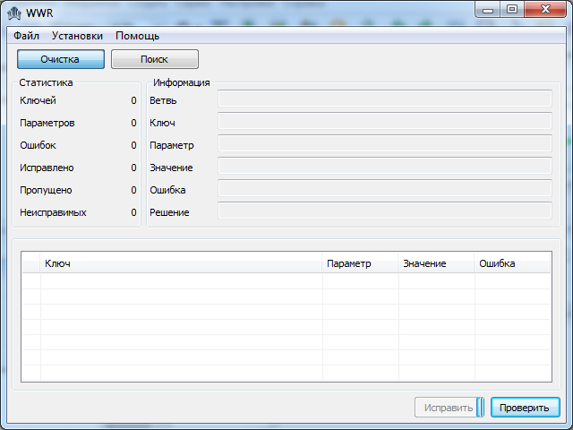
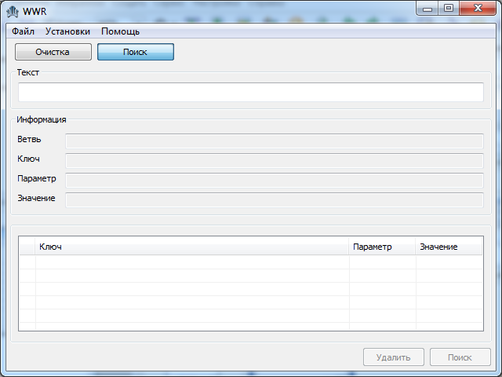
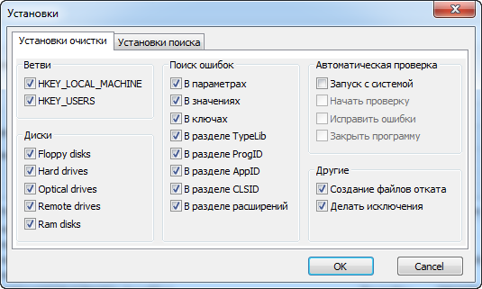
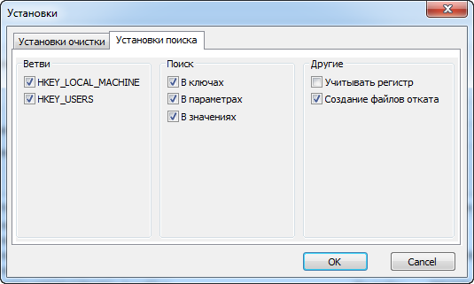
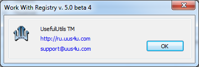

Work with Registry - великолепная бесплатная программа от команды UsefulUtils, предназначенная для очистки реестра от неверных записей, параметров и ошибочных ключей.
Главное окно Work with Registry выглядит относительно просто и понятно. Можно поставить два варианта возможных действий в основном дисплее: очистка и поиск:


Проверим работоспособность по очистке реестра. В окне очистка нажимаем проверить и ждем результатов. Ниже в дисплее выводятся все ключи с расположением и ошибками:
Результат исправления ошибок не особо радует. Всего одна ошибка исправилась, остальные утилита зачла неисправными:
Опробуем поиск по введенному тексту. Введем "key" и результат представлен ниже. Можно флажочком отмечать и удалять при необходимости.
Настройки Work with Registry позволяют настроить установки операций очистки и поиска:


Во вкладке помощь мы можем разузнать о программе. Нам открывается окно с сайтом разработчиков и почтой:

Хотелось бы отметить, что Work with Registry очень простая в применении программа, кроме того, занимает совсем мало места и про системные требования и нечего говорить.
Еще один качественный плюс это доступность, утилита соверешенно бесплатна.
В данном статье сайте вы можете рассмотреть подробное описание Work with Registry, а так же скачать данную утилиту: http://rusopen.com